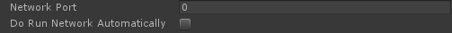
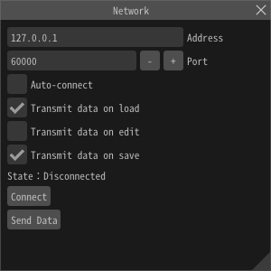

Network¶
Overview¶
Set parameters related to the network. You can edit the playing effect in an application (game etc.) via the network from the outside when application is running. If you would like to find out more, please read the help page about the runtime network.
Overview¶
Set parameters related to the network. You can edit the effect of an application (game etc.) incorporating the running runtime via the network from the outside. Unity, UnrealEngine 4 etc, can be used in an environment where plug-ins are provided from the official of Effekseer. In other environments please consult the person who embeds Effekseer's runtime.

How to use¶
The side on which the effect can be editted (application, game etc.)¶
It depends on each plug-in or library. In order to edit the effect via the network, specify the port to be used for communication. Execute a function that explicitly activates the server for communication or make the function execute automatically. After that, play the effect you want to edit.

Effekseer¶
Effekseer opens the file from which the effect you want to edit is based. Then, specify the connection destination from the network panel and connect. Edit the effect and press "Send Data" button. Then the effect in the application be editted.

Limitation¶
The file name of the efk file to be load by the application must be the same as the file name to be edited. For example, if you are playing "Laser.efk" in your application, you will need to edit "Laser.efkproj" in the tool. Also, edits are not reflected on images, models, and sounds that do not exist in the application.
TIPS¶
Specify 127.0.0.1 as the address when editing the effect of an application running on the same computer.
Parameters¶
Address¶
Enter the IP address or DNS of the computer/server running the application.
Port¶
Enter the port number of the computer/server running the application.
Auto-connect¶
If connection has not yet been established, connection to the remote application will be attempted at a fixed interval.
Transmit data on load¶
When loading an effect file, if connection has been established, send the effect data to the application.
Transmit data on edit¶
When making an edit to the effect, if connection has been established, send the effect data to the application.
Transmit data on save¶
When saving the effect, if connection has been established, send the effect data to the application.
Send¶
Forcefully send effect data to the application.
Connect¶
Connect to the specified remote application.